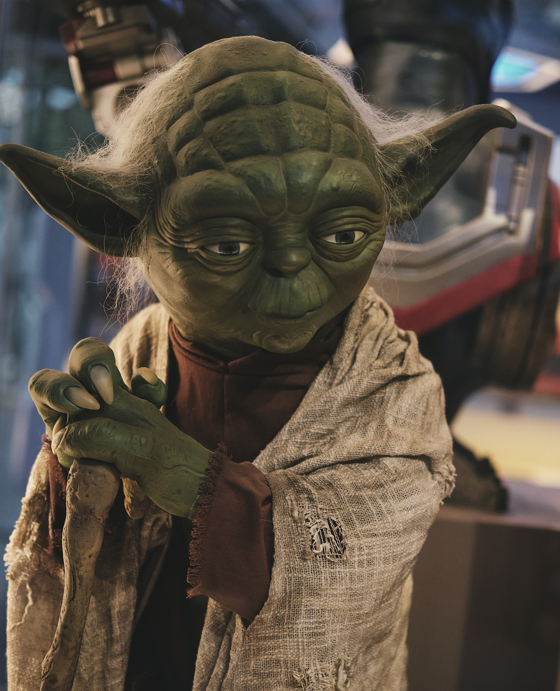

Contact Us
For more information when available from 2:00 pm to 8:00 pm:
- Phone Number: 517-635-7892
- Email Address: StarWarsFanatic@gmail.com
For more information when available from 2:00 pm to 8:00 pm:
Star Wars: A New Hope is the first movie in the original Star Wars trilogy. This film was revolutionary for 1977; its' special effects and music was outstanding for the time. The editing process was extensive and very important for the success of the film.
 View "Star Wars: A New Hope" Article
View "Star Wars: A New Hope" Article
The Empire Strikes Back is the second movie in the original Star Wars trilogy. This movie is darker and grittier than the last and is more designed as the first part of a story instead of being a standalone film. The film is considered by most to be the best film in the original trilogy.
 View "The Empire Strikes Back" ArticleReturn of the Jedi is the final movie in the original Star Wars trilogy. This is generally the most criticized of the trilogy because of the Ewoks slowing the pace down of the film. Most believe that this film is better than the Star Wars prequels.
 View "Return of the Jedi" Article
View "Return of the Jedi" Article